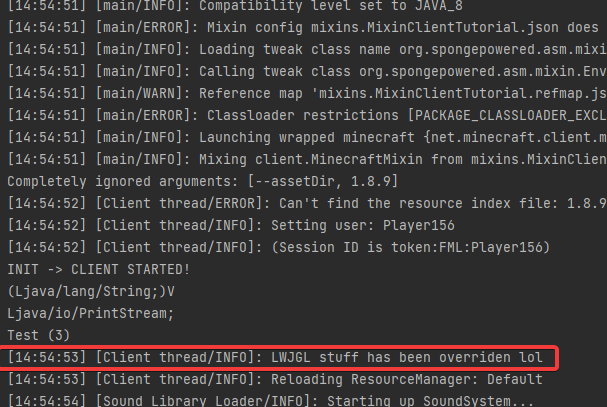

5 | Modifying arguments
What is ModifyArg?
Consider the following method
1 2 3 4 5 6 7 8 9 10 11 12 | |
As you can clearly observe, it consists of a set print statements, which outputs 10 strings with no noticeable pattern
So, what if I wanted to change the text "Hi! 5!" to "Hello world!"?
With our current knowledge all we could do is @Overwrite it, but this becomes very painful with larger method bodies with functions/variables that need @Shadow'ing (I will talk about shadowing later)
So what do we do?
May I introduce you to @ModifyArg, which is a neat function, that allows us to modify the arguments of a function in a function
In the example provided, we can use @ModifyArg like so
1 2 3 4 5 6 7 8 | |
This (probably) looks exasperatingly complex, so I shall explain what the hell is going on in the aforementioned example
The first parameter is method, this is the method that we are going to modify
Now for the hunk of an @At statement
VALUE = "INVOKE"- This signifies that we are going to look for the invocation of a method
target = "Ljava/io/PrintStream;println(Ljava/lang/String;)V"- This tells
Mixinwhere and what method to modify
- This tells
Lets break down the syntax of "Ljava/io/PrintStream;println(Ljava/lang/String;)V" using the table below
The L represents a class name, so Ljava/io/PrintStream; is the path to the class PrintStream, which is whereprintln` is located
The println specifies the method name we are looking for, which is println
Inside the brackets, we see another class (Ljava/lang/String;), this is the path to the String class, as String is actually a class, just one in the standard library, which doesn't need to be imported, everything inside these brackets are the parameters for println
Just after the brackets there is a V, which simply means void specifying that the println function doesn't return any value
| FieldType term | Type | Interpretation |
|---|---|---|
| B | byte | signed byte |
| C | char | Unicode character code point in the Basic Multilingual Plane, encoded with UTF-16 |
| D | double | double-precision floating-point value |
| F | float | single-precision floating-point value |
| I | int | integer |
| J | long | long integer |
| L | ClassName; | reference an instance of class ClassName |
| S | short | signed short |
| Z | boolean | true or false |
| [ | reference | one array dimension |
There are only 2 more parameters to go over: ordinal and index
-
ordinal = 4(optional)- This allows you to set an offset of which
printlnstatement you actually want to modify, indexed by zero, in this case, it was set to 4, meaning that the 4th zero indexed println statement's arguments will be modified
- This allows you to set an offset of which
-
index = 0- This is the last parameter that we have set, which isn't inside the
@Atstatement, this allows us to select which argument in the function we want to modify (indexed by zero)
- This is the last parameter that we have set, which isn't inside the
Lastly, the return statement, return "Hello World!", just returns what we want that argument to be
More context
What happens if the argument we want to modify depends on all of the other arguments being passed in?
Say, instead of println accepting 1 argument (String), rather, it accepted 2 arguments, your message, and the number of times you want it to be printed
1 2 3 4 5 6 7 8 9 10 11 12 | |
In this example, once again, we want to change the text of "Hi! 5!" to "Hello world!", but this time we also want to add the number of times it will repeat to it (ie: "Hello World! (34)")
It's as simple as adding the extra arguments to the function, like shown below
1 2 3 4 5 6 7 8 | |
What is ModifyArgs?
Warning
My explanation for this may be lacking, as there isn't much official documentation on @ModifyArgs, so I am basing this on the FabricMC examples
Is this a repeat of the previous section?
- Nope!
@ModifyArgsis different to@ModifyArg
Okay, so I know how to modify one argument, what about multiple?
Well using the former example where println has 2 arguments, a message and a number of times to print that message, we can modify multiple arguments like so
1 2 3 4 5 6 7 8 9 10 11 | |
Args? What's that?
Args is a class provided by Mixin that provides 2 major methods
-
args.get(int index)- This allows you to retrieve one of the function's arguments be index
-
args.set(int index, T value)- This allows you to set an arguments value by index
So, now that we know a bit more about class, we can understand what this does
1 2 3 4 5 | |
A practical example
Note
The MinecraftDev plugin can autocomplete the method descriptors for you
In the method startGame, there is a line where the version of the LWJGL library is outputted to the console, this is exactly what we want to modify
1 2 3 4 5 6 7 8 9 10 11 12 13 14 15 16 | |
First, we need to get the descriptor of the info function, so to do this we
- Open the info function file, usually done by pressing Ctrl+Left Button, with your cursor above the usage, in most IDEs
- Look at the package name, in this case it's
org.apache.logging.log4j, so we convert that into the descriptor format by - Making it separated by forward slashes =
org/apache/logging/log4j - Adding the class name =
org/apache/logging/log4j/Logger - Adding an
Lto signify class =Lorg/apache/logging/log4j/Logger - Adding a semi-colon =
Lorg/apache/logging/log4j/Logger;
Now we can add the method name
Lorg/apache/logging/log4j/Logger;info
Then the only parameter, which is a string
Lorg/apache/logging/log4j/Logger;info(Ljava/lang/String;)
Lastly adding the return value, which is void
Lorg/apache/logging/log4j/Logger;info(Ljava/lang/String;)V
We're modifying the arguments of the invocation of a function, so value can be set to INVOKE
The target should be set to the descriptor, just like we specified
The ordinal should be set to 0 as we are looking for the first Logger.info statement
The index should be 0 as the Logger.info function body only has one argument, which is the argument we want to modify
The return value should be what we want to set the argument to
1 2 3 4 5 | |
Result

How can I get help, ask questions, etcetera?
The easiest way is to join my Discord server, which you can find here https://discord.gg/45RhZT5e9Z